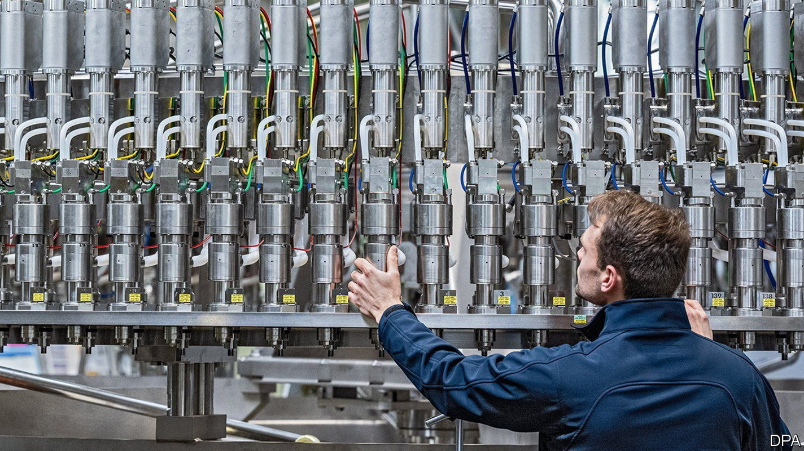

Europe’s economy grapples with an acute energy shock
But a recession is not expected—yet

For the best part of a decade, rock-bottom interest rates seemed like a fact of life in the euro zone—as did low inflation. Now consumer prices are rising at an annual rate exceeding 8%, well above the European Central Bank’s target of 2%. Members of the bank’s governing council have signalled their intent to raise rates soon, a message they were expected to reaffirm at a monetary-policy meeting on June 9th, as we went to press. But the ecb finds itself in a tricky position: of contending not only with surging prices, which might warrant rapid rate rises, but also gloomier growth prospects, which might warrant patience.
The root cause of both developments is a severe energy-price crunch. Prices of oil and natural gas had already been rising before Russia’s invasion of Ukraine; the war sent them soaring higher still. These price rises have played a much bigger role in pushing up consumer-price inflation in Europe than in America, where stimulus has also been a culprit. Energy prices in the euro area—which rose at a whopping annual rate of 39% in May—are contributing about four percentage points to headline inflation, compared with two in America.
The effects are starting to spill over to other prices. “Core” inflation, which excludes food and energy prices, was higher in the euro zone in May than economists had expected. German producer prices rose at a record clip of 33.5% in April, compared with last year, driven not just by energy, but also energy-intensive goods such as concrete and chemicals. The result is a big hit to firms’ costs and households’ purchasing power. In how much danger does it put the euro area’s economy?
One consequence of the energy shock is lower household incomes in real terms. Wage growth has been picking up modestly across the zone, but still trails behind inflation. Some employers have made one-off payments to workers, to compensate them for surging prices without incurring higher recurring wage costs. Even then, however, annual pay growth in the Netherlands, where the labour market is tight, stood at just 2.8% in May. In one sense, this is good news for the ecb, because it reduces the risk of a wage-price spiral. But it may feed into lower consumption, weakening the rest of the economy in turn.
A moderation in demand only adds to a heap of woes for the manufacturing sector, where confidence is already in steep decline. Supply disruptions as a result of China’s recent lockdowns and high energy prices are hurting businesses, with Germany and eastern Europe looking most vulnerable to an industrial slowdown. New orders for the zone’s manufacturers in May fell for the first time since June 2020, indicating weaker demand. Export orders declined at their fastest pace in two years.
Economists are therefore pencilling in slower growth over the rest of the year. But few expect an outright recession just yet. That is because some parts of the economy confront the energy shock from a position of strength, rather than weakness. Many services firms are still reaping the rewards from the end of Omicron-related lockdowns. Southern countries are benefiting the most, given their reliance on tourism; in Spain arrivals of sun-seeking northerners almost reached pre-pandemic levels in April. Overall, business sentiment in services remains strong, with many firms reporting a growing backlog of work.
Jobs are still plentiful, too. Across the bloc there were three vacancies for every 100 jobs in the first quarter of 2022, a high level by historical standards. Firms’ hiring expectations are solid, albeit slightly weaker since the start of the war in Ukraine. More than one in four businesses in Europe say that a lack of staff is preventing them from producing more.
A hoard of savings built up during lockdowns should also provide consumers with some cushion against the energy shock. According to our calculations, such “excess” savings in France and Germany amounted to a tenth of disposable incomes in the first quarter of 2022 (see chart).
These buffers will blunt the impact of the energy shock. But they will not offset it altogether. Excess savings, for a start, are not evenly distributed. Poorer people in rich countries, and most households in poorer countries, have precious little left. In Slovakia, for example, the savings rate never rose much during the pandemic. “Consumption weakness will come from lower-income households,” says Jens Eisenschmidt of Morgan Stanley, a bank. Retail sales, in real terms, have moved sideways for months.
Many governments have put together spending programmes to shield households from high energy prices. According to Bruegel, a think-tank in Brussels, Germany, France and others are spending between 1% and 2% of gdp. Not all of that is well-targeted, however. Much of it is going on relief for better-off households that do not need it; other measures have involved meddling with prices, with some of the benefit going to energy suppliers.
Even if the euro area is spared a recession, then, the energy shock will be a drag on growth. The ecb faces an unenviable dilemma. With every increase in inflation on the back of food and energy prices, the European economy is getting weaker. ■
For more expert analysis of the biggest stories in economics, business and markets, sign up to Money Talks, our weekly newsletter.